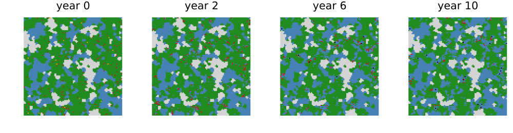
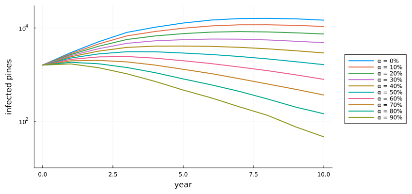
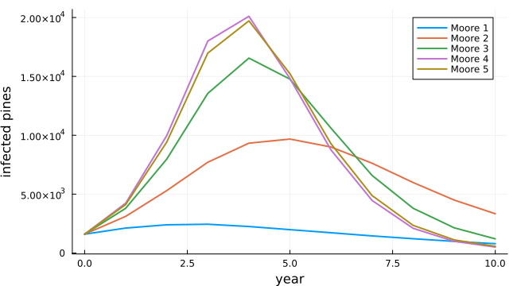

Pine wilt disease and felling
Simon Frost
Overview
Pine wilt disease is caused by the pine wood nematode, carried from tree to tree by Monochamus beetles. It has killed pine forests across East Asia since it arrived from North America. Huang et al. (2012) built PWD-CASim, a cellular automaton on a 10 m raster of a forest in Zhejiang. They used it to ask how far the disease reaches in a year and how much felling of symptomatic trees it takes to contain it. This model is an adaptation. The source’s forest map is not published, so a neutral landscape stands in for it. The source also gives no rule for the death of unfelled trees.
ENV["GKSwstype"] = "100"
using EcologicalCellularAutomata
using CellularAutomataCore
using Plots
using Random
using StatisticsThe model
Each cell is a 10 m pixel: non-forest, other forest, a healthy pine, an infected pine (latent or symptomatic), or a dead pine. Each year a healthy pine is infected with probability Σₙ wₙ Cₙ / (8n), where Cₙ counts the infected pines in the square ring at distance n and wₙ are ring weights, capped at 1. Symptomatic pines are felled with probability α a year and otherwise die after four years. The source’s experiments infect pines directly, without a latent period.
model = build(:pine_wilt_casim)CAModel pine_wilt_casim
Huang et al. (2012) PWD-CASim, Moore 1, incubation false
states:
cover::Int8 = 2 ∈ 0:5 # 0 non-forest, 1 other forest, 2 healthy, 3 latent, 4 symptomatic, 5 dead pine
years::Int8 = 0 # years latent or symptomatic
parameters:
α = 0.6 # felling rate of symptomatic pines per year
p_latent = 0.8 # share of new infections that are latent (incubation)
p_stay = 0.1 # probability a latent pine stays latent a year
max_latent = 2 # longest latent period (years)
max_symptomatic = 4 # years from symptoms to natural death
rule: LocalRule(<anonymous function>, Offsets((-1, -1), (0, -1), (1, -1), (-1, 0), (1, 0), (-1, 1), (0, 1), (1, 1)))The ring weights of the source’s Moore 1 to 5 neighbourhoods:
[(moore=k, weights=pine_wilt_weights(k)) for k in 1:5]5-element Vector{@NamedTuple{moore::Int64, weights::Vector{Float64}}}:
(moore = 1, weights = [1.0])
(moore = 2, weights = [1.0, 0.8])
(moore = 3, weights = [1.0, 0.8, 0.6])
(moore = 4, weights = [1.0, 0.8, 0.6, 0.4])
(moore = 5, weights = [1.0, 0.8, 0.5, 0.3, 0.1])A stand-in forest
The source used a forest map of Sizhoutou town, resampled to 10 m and classified into pine, other forest and non-forest; it is not published. A neutral landscape of 300 × 300 cells, 60% pine, stands in, with 1400 symptomatic and 200 latent pines placed at random:
prob = problem(:pine_wilt_casim; seed=1)
sol = solve(prob; saveat=2)
forestmap(u, title) = heatmap(u.cover[1:100, 1:100]'; aspect_ratio=:equal, framestyle=:none,
colorbar=false, title, clims=(0, 5),
c=[:lightgray, :steelblue, :forestgreen, :orange, :firebrick,
:black])
plot([forestmap(u, "year $t") for (t, u) in zip(sol.t[[1, 2, 4, 6]], sol.u[[1, 2, 4, 6]])]...;
layout=(1, 4), size=(1000, 260))
A corner of 100 × 100 cells (1 km square). Grey is non-forest, blue other forest, green healthy pine, red symptomatic pine and black dead pine. Felled pines become other forest.
Felling rate
The source’s Figure 4 varies the felling rate from 0 to 90% with the Moore 1 neighbourhood. Five runs each here:
rates = 0.0:0.1:0.9
curves = Dict(α => mean([pine_wilt_infected.(solve(problem(:pine_wilt_casim; seed=s,
pmap=(; α))).u)
for s in 1:5]) for α in rates)
plot(0:10, [curves[α] for α in rates]; lw=2, label=permutedims(["α = $(round(Int, 100α))%" for α in rates]),
xlabel="year", ylabel="infected pines", legend=:outerright, size=(850, 400),
yscale=:log10, ylims=(10, 3e4), left_margin=5Plots.mm, bottom_margin=5Plots.mm)
The source describes three regimes. Below 40% felling, infection grows quickly. Between 50% and 70% it rises for a few years and then falls. At 80% and 90% it declines from the start. Here:
[(felling=round(Int, 100α), peak=round(Int, maximum(curves[α])),
peak_year=argmax(curves[α]) - 1, year_10=round(Int, curves[α][end])) for α in rates]10-element Vector{@NamedTuple{felling::Int64, peak::Int64, peak_year::Int64, year_10::Int64}}:
(felling = 0, peak = 16083, peak_year = 8, year_10 = 14714)
(felling = 10, peak = 11710, peak_year = 8, year_10 = 10776)
(felling = 20, peak = 8372, peak_year = 7, year_10 = 7433)
(felling = 30, peak = 5790, peak_year = 6, year_10 = 4841)
(felling = 40, peak = 4098, peak_year = 5, year_10 = 2914)
(felling = 50, peak = 3096, peak_year = 3, year_10 = 1634)
(felling = 60, peak = 2443, peak_year = 3, year_10 = 790)
(felling = 70, peak = 2019, peak_year = 2, year_10 = 365)
(felling = 80, peak = 1836, peak_year = 1, year_10 = 144)
(felling = 90, peak = 1695, peak_year = 1, year_10 = 46)The regimes come out as in the source, with one difference. At 80% and 90% infection still rises for the first year before it falls, where the source’s runs fall from the start. The magnitudes differ more: without felling, the source’s infection peaks near 51 000 pines and this one near 16 000. The source’s forest is larger and its pines more continuous. The unfelled curve falls after year 8 only because infected pines die after four years, which the source does not state.
Neighbourhood size
The source’s Figure 3 compares the Moore 1 to 5 neighbourhoods at 60% felling. It found little difference between Moore 1 and 3 and a jump at Moore 4 (radius 40 m, a 9 × 9 window), which it read as the range of the disease:
moore = Dict(k => mean([pine_wilt_infected.(solve(problem(:pine_wilt_casim; seed=s,
moore=k)).u)
for s in 1:5]) for k in 1:5)
plot(0:10, [moore[k] for k in 1:5]; lw=2, label=permutedims(["Moore $k" for k in 1:5]),
xlabel="year", ylabel="infected pines", size=(650, 360))
[(moore=k, peak=round(Int, maximum(moore[k]))) for k in 1:5]5-element Vector{@NamedTuple{moore::Int64, peak::Int64}}:
(moore = 1, peak = 2443)
(moore = 2, peak = 9676)
(moore = 3, peak = 16551)
(moore = 4, peak = 20101)
(moore = 5, peak = 19715)Here the peak rises steadily from Moore 1 to Moore 4, and Moore 5 is like Moore 4. There is no jump at Moore 4. Wider neighbourhoods add more rings, whose weights sum to more than one, so the infection probability saturates sooner wherever pines are infected around a tree. How far that matters depends on how the pines are arranged, and the source’s map, which may hold the explanation, is not available.
Deviations from the source
foreach(d -> println("- ", d), model_info(:pine_wilt_casim).deviations)- The source's forest map of Sizhoutou town is not published; a neutral landscape of 300 x 300 cells (60% pine) stands in, and any land cover matrix can be given.
- The source gives no rule for natural death, although its unfelled runs decline; a symptomatic pine not felled dies after four years and becomes a non-infectious dead pine (a sixth state).
- The 'no incubation' option used in all the source's experiments is not defined; with incubation = false new infections are symptomatic at once.
- An infection probability above 1 (possible for Moore 2 and larger) is capped at 1.
- Density-priority felling is not implemented: its threshold is not defined in the source and no experiment used it.
- The source ran single runs; replicate runs and their spread are shown here.Huang, Mingxiang, Chaohui Yu, Dali Zhou, and Fang Bei. 2012. “A Cellular Automata Model of Pine Wilt Disease Spread and Its Simulation Tool for Application.” Proceedings of the 2012 National Conference on Information Technology and Computer Science, Advances in intelligent systems research, 974–78. https://doi.org/10.2991/citcs.2012.248.